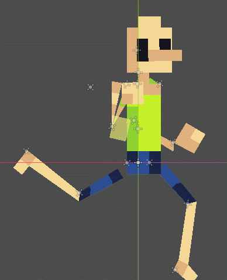

// THE GODOT ARC;
November 15, 2026. 10:54 AM
In the last few weeks I made a pretty solid attempt at building my new design for BASEWORLD in Godot, and I learned a lot by doing it! For context, I have been using GameMaker for 15 years, and since I am restarting my game, I decided to use this as an opportunity to try out Godot. The TL;DR is that it's pretty cool! But I still really like GameMaker...
The first thing I did was re-create my messed up render pipeline that I use in GameMaker. The idea is simple, I render the game onto a surface that is 4x as small as the final render surface, scale it up to match the final render surface (4x), and then apply an outline to the contents of that surface. The result is an outline over my pixel art comprised of pixels that are exactly 1/4th the size of everything else in the game without disrespecting the intended pixel-grid size. This was a total PAIN in Godot, but I ended up getting it done without really understanding how it worked ( and leaning on my good friend Zandy's shoulder ), and I guess that's just what happens when you are given really powerful tools like Nodes that just do a ton of stuff out of the box - you only have to mess with some levers until you get what you want...
I got to experiment with the Skeletal Animation system, which is not really something that GameMaker supports. It's really cool!


